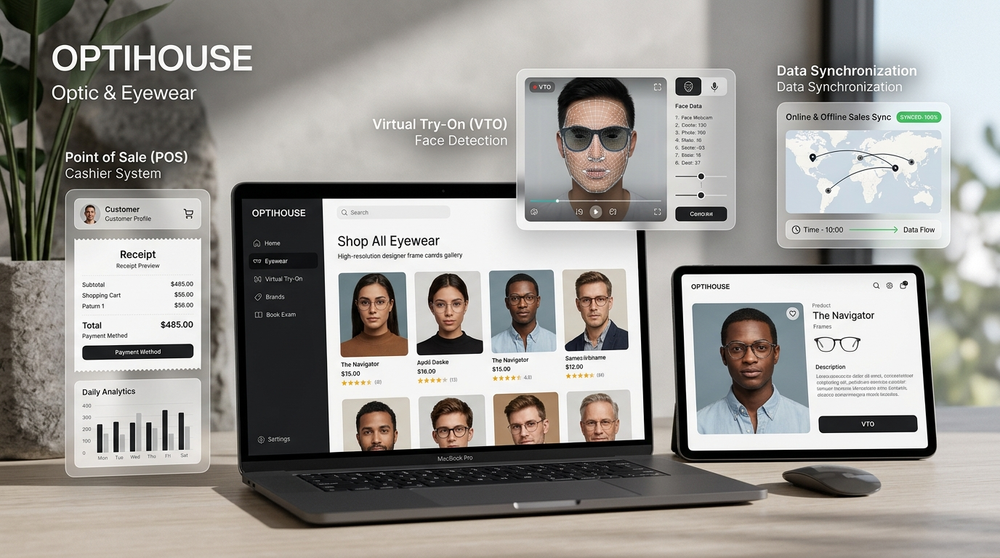

Lihat Detail Lengkap ↗
Sistem Informasi Penjualan Berbasis Web — Optik Optihouse
Proyek skripsi yang merancang dan membangun sistem informasi penjualan optik komprehensif, menggabungkan transaksi offline (Point of Sale kasir toko) dan online (e-commerce & Virtual Try-On) dengan sinkronisasi stok terpusat.